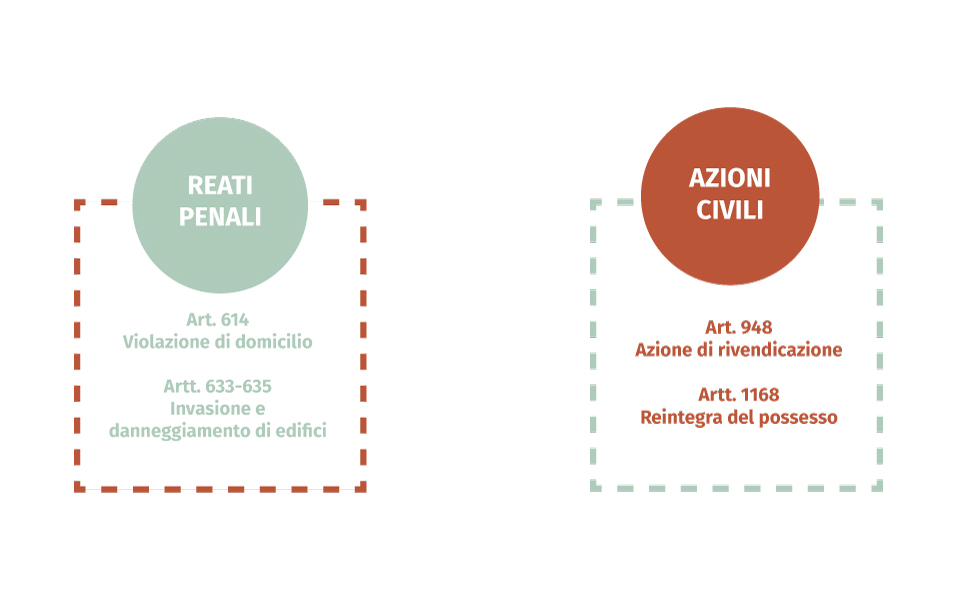
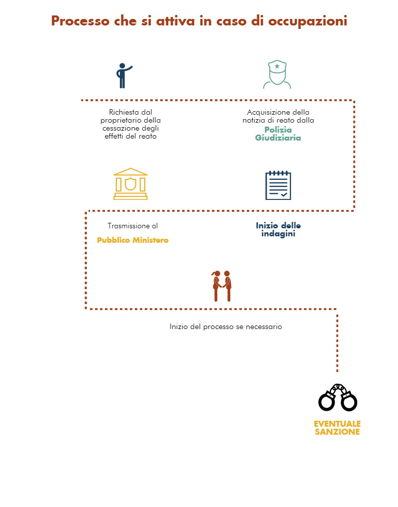

I reati coinvolti
Grazie all’intervento del giudice Letizio Magliaro è stato possibile approfondire i reati che entrano in gioco quando si parla di occupazioni abusive. Abbiamo avuto modo di scoprire insieme a lui anche l’iter che porta allo sgombero di un edificio occupato.
Nello specifico si è visto come i reati che entrano in gioco possono essere di tipo civile o penale.
I reati previsti dal codice civile sono di tutela della proprietà privata, e in particolare sono legati a due articoli:
- Art. 948: azione di rivendicazione
Il proprietario può rivendicare la cosa da chiunque la possiede o detiene e può proseguire l'esercizio dell'azione anche se costui, dopo la domanda, ha cessato, per fatto proprio, di possedere o detenere la cosa.
- Art. 1168: reintegra del possesso
Il proprietario può rivendicare la cosa da chiunque la possiede o detiene e può proseguire l'esercizio dell'azione anche se costui, dopo la domanda, ha cessato, per fatto proprio, di possedere o detenere la cosa.
Per ciò che riguarda invece il codice penale, innanzitutto il nostro ordinamento vede l’occupazione come una condotta che viene punita con una sanzione del giudice, quindi è reato. Esistono poi due tipologie di occupazione di abitazione:
- la casa può essere già occupata e quindi si parla del reato di violazione del domicilio, disciplinato dall’art. 614 del codice penale.
- oppure può essere semplicemente in possesso di una persona che non vi abita, e quindi si parla di invasione e danneggiamento di terreni ed edifici, reato disciplinato dagli art. 633 e 635 del codice penale.

Il nostro ordinamento poi, prevede una serie di conseguenze quando si commette un reato, nello specifico solitamente viene predisposta un’indagine e si dà vita ad un processo per accertare la presenza di un reato, processo che termina con un’eventuale sanzione.
Ma la risposta dell’autorità giudiziaria può essere anche di tipo preventivo, senza arrivare al processo vero e proprio e quindi la polizia giudiziaria acquisisce la notizia di reato e la trasmette al pubblico ministero che avvia le indagini. Nel caso specifico del nostro reato può esserci un passaggio precedente, ovvero è il proprietario dell’immobile a dar il via all’iter giudiziario, chiedendo la cessazione degli effetti di quel reato.
Infine, concretamente, l’ordinamento prevede una serie di attenuanti per le persone in difficoltà, e si parla di stato di necessità, stato in cui si ritrovano solitamente le persone costrette ad occupare edifici vuoti.
